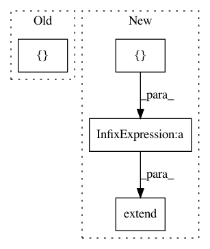

34bae27ac7d3c39335a2b8c7d4cd4efba56aa398,rllib/execution/replay_buffer.py,PrioritizedReplayBuffer,sample,#PrioritizedReplayBuffer#Any#Any#,201
Before Change
weights.append(weight / max_weight)
weights = np.array(weights)
encoded_sample = self._encode_sample(idxes)
return tuple(list(encoded_sample) + [weights, idxes])
@DeveloperAPI
def update_priorities(self, idxes, priorities):
After Change
weight = (p_sample * len(self._storage))**(-beta)
count = self._storage[idx].count
weights.extend([weight / max_weight] * count)
batch_indexes.extend([idx] * count)
batch = self._encode_sample(idxes)
// Note: prioritization is not supported in lockstep replay mode.
if isinstance(batch, SampleBatch):
In pattern: SUPERPATTERN
Frequency: 3
Non-data size: 4
Instances
Project Name: ray-project/ray
Commit Name: 34bae27ac7d3c39335a2b8c7d4cd4efba56aa398
Time: 2020-06-12
Author: ekhliang@gmail.com
File Name: rllib/execution/replay_buffer.py
Class Name: PrioritizedReplayBuffer
Method Name: sample
Project Name: dmlc/gluon-nlp
Commit Name: e284fe0449413d11e7ade24582c673882714477d
Time: 2019-01-14
Author: 1026639175@qq.com
File Name: scripts/bert/dataset.py
Class Name: BERTTransform
Method Name: __call__
Project Name: dmlc/gluon-nlp
Commit Name: c84c7a0f0e2657f9772c2301dfcdc014b909fa9c
Time: 2019-01-22
Author: 1026639175@qq.com
File Name: scripts/bert/dataset.py
Class Name: BERTTransform
Method Name: __call__